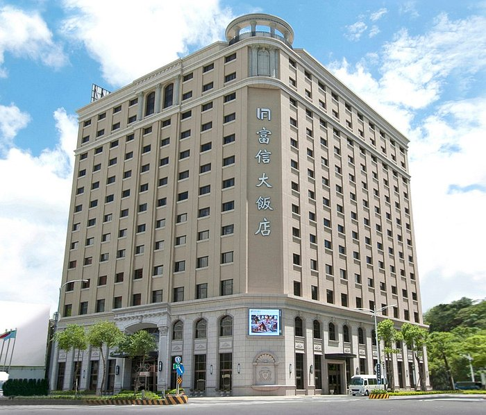
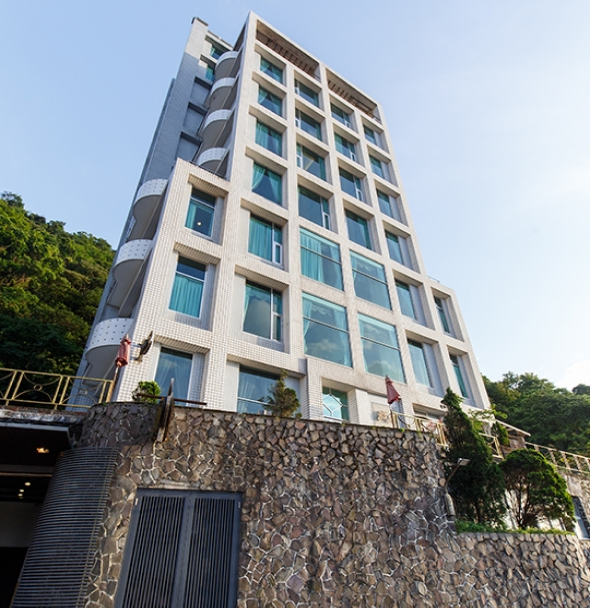
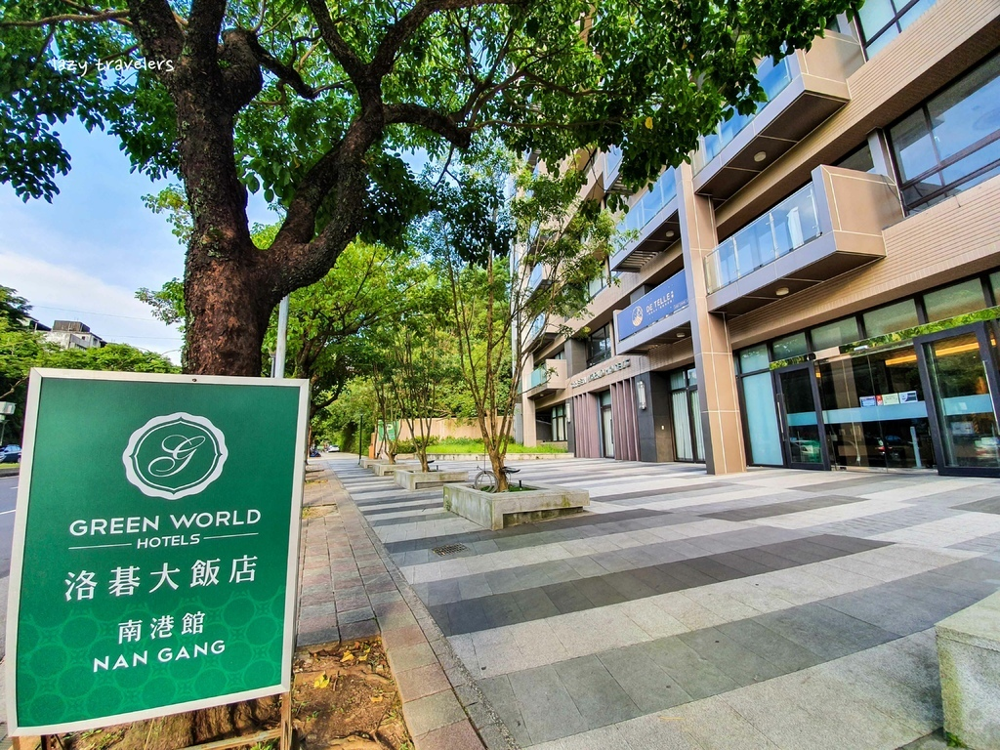

-
【公車】 可搭乘市區公車到達南港老爺行旅，可搭乘市區公車66、66副、802、812、815、867、902、903、906等路線，於「南港老爺行旅站」下車即可抵達。
【捷運】 1.捷運文湖線: 南港軟體園區站 -中國信託出口 2.捷運板南線: 南港展覽館站- 步行約8分鐘
【開車】 從國道一號汐止交流道下，沿著汐萬路往市區方向前進，接著左轉大同路三段，即可看到南港老爺行旅的招牌。
南港老爺行旅
-

【公車】 可搭乘市區公車到達富信大飯店，可搭乘市區公車66、66副、802、812、815、867、902、903、906等路線，於「富信大飯店站」下車即可抵達。
【捷運】 可搭乘板南線至南港展覽館站，轉乘捷運文湖線至汐科站，再轉乘公車或計程車前往富信大飯店。從汐科站搭乘市區公車往富信大飯店方向，可在「富信大飯店站」下車即可抵達。
【開車資訊】 1. 台北市區經南港路一段(南港展覽館)直行大同路右方約1.5公里即抵達。 2. 台北市區車行環東大道 ( 往汐止方向 ) 接經貿一路左轉大同路方向。 3. 汐止往南港方向，順行大同路一段 ( 緊鄰台塑加油站旁 )。
富信大飯店
-

【公車】 可搭乘市區公車到達薇星旅館，可搭乘市區公車262、793、795、796、824、827、832、838、915、927等路線，於「薇星旅館」站下車即可抵達。
【捷運】 可搭乘板南線至汐止站，再轉搭乘公車或計程車前往薇星旅館。從汐止站前搭乘市區公車往薇星旅館方向，可在「薇星旅館」站下車即可抵達。
【開車】 從國道一號汐止交流道下，沿著汐萬路往市區方向前進，接著左轉新台五路一段，即可看到薇星旅館的招牌。
薇星旅館
-

【公車】 可搭乘市區公車到達洛碁大飯店南港館，可搭乘綠11、205、212、276、306、620等路線，於「洛碁大飯店站」下車即可抵達。
【捷運】 可搭乘板南線至南港展覽館站，出站後轉乘公車或計程車前往洛碁大飯店南港館。從南港展覽館站搭乘市區公車往洛碁大飯店方向，可搭乘綠11、205、212、276、306、620等路線，於「洛碁大飯店站」下車即可抵達。
【開車】 從國道一號汐止交流道下，沿著汐萬路往南港區方向前進，接著進入研究院路二段即可抵達洛碁大飯店南港館。